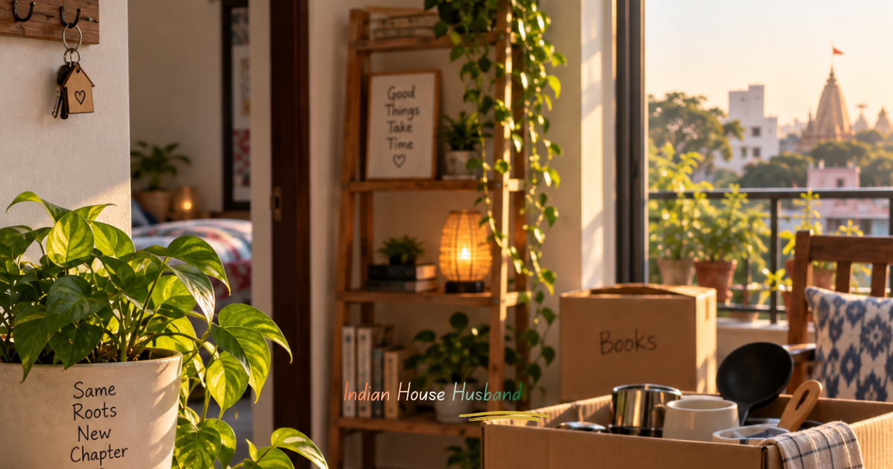

What It’s Really Like to Move Back to a Small Town After the Big City

"When my father’s health took a turn and we decided to move in with my parents, coming back to my hometown felt, for me, like returning to my own roots. For my wife, who grew up entirely in apartment culture, it was a much bigger shift. She’d lived in hostels from a young age, so adjusting to a new place and new people wasn’t unfamiliar to her. But there’s a real difference between a hostel and a small-town neighbourhood: in a hostel, most people mostly mind their own business. In a small town, minding everyone else’s business is practically a full-time occupation."
"I’d technically come back to my own hometown, but the circumstances this time were very different. My wife and I had visited over the years, so the neighbourhood already knew us both. What changed everyone’s gaze this time was that I’d left my job and we now had a daughter. Suddenly, comments started arriving from every direction — about a mother who’s “always in the office,” about wanting a son now that a daughter had arrived, about a daughter-in-law who’s “always sitting in office,” about a husband who hangs laundry on the terrace and even cooks — even though we had house help who handled the cooking, dishes, laundry and folding, and another for sweeping and mopping. Occasionally those chores still landed on me anyway, and apparently that alone was worth commenting on."
"We decided early on not to engage with any of it — no defending ourselves, no arguments, just laughing it off when it came up. My parents did the same: no elaborate justifications, and importantly, nothing added to give the gossip more fuel. It turns out that’s really all it takes. If the family in question refuses to pour ghee on the fire, most of this talk quietly dies down on its own. Within a few weeks, the noise had mostly faded."
"The biggest advantage of a small town is that you don’t need any app or online group to have a community — your neighbourhood simply becomes one. It’s where people discuss everyone’s business, argue about politics, and organise religious events together. And more importantly, when things go wrong, that same neighbourhood shows up. When my father collapsed, people from around us were there within minutes, arranged a vehicle when he needed to be shifted to a hospital 20–25 kilometres away, and brought food to the hospital without being asked. There was real comfort in knowing that if something was needed, someone nearby would help arrange it."
"But nothing good comes without its other half. The same community that shows up for you in a crisis often carries a mindset that’s still largely patriarchal. A household where the husband runs things at home and the wife manages the finances doesn’t sit easily with that mindset. A husband who drinks and mistreats his wife draws less judgment, oddly, than a husband who’s simply willing to run the house and raise the children. A wife who is more educated and more capable than her husband, yet stays home purely to raise children, is seen as acceptable — but a mother who steps out to support her family financially quickly finds her character questioned instead."
"Since this chapter of our story is set to run for about a year and a half here, I plan to write more about both the challenges and the genuinely good parts of this phase. One of the first practical challenges was simply finding space for a home office inside the house. We closed off part of an open terrace hall with a glass door, tiled it, added an air conditioner, and bought computer tables — we already had office chairs. The harder problem was power backup. Outages aren’t as frequent now as they were during my college years here, but a home office still needs an uninterrupted power supply. We ended up installing a solar panel setup, which also qualified for a government subsidy, and the office was finally functional."
"My wife started working from home, and I took on running the house full-time — with a full-time house help for cooking and related work, and another for sweeping and mopping, while also looking after my mother, father and daughter. For getting around, we have a scooter and a car that both of us drive. Our house here sits on close to 2,000 square feet, and managing a home that size without house help simply wasn’t realistic."